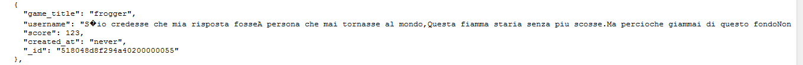
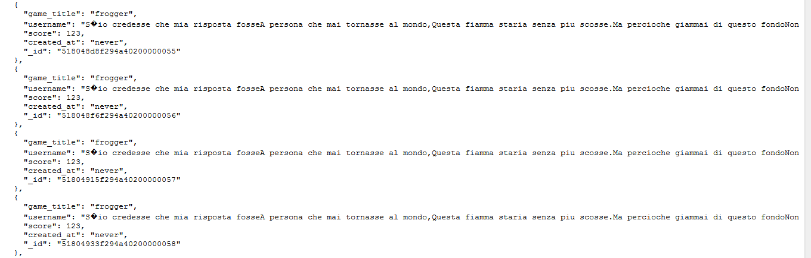

Here
Security Assessment of Scorecenter
COMP 20, Spring 2013 [Assignment 6]
Sarah McDaniel
Introduction
Ming Chow's COMP 20 students received the assignment of creating a Scorecenter web application. Students were required to write APIs enabling users to enter high scores for HTML5 web games, access all scores entered in the database, access the highest scores entered in the database, and search for a particular user's scores. Students ultimately made their Scorecenter applications accessible on Heroku.
We were hired to perform a security analysis of a particular student's Scorecenter application. Our investigation of this application is of great urgency, as this student has been contracted to provide a high-security score-tracking database application system for the upcoming International Online Tetris Olympiad; it is the hope of our client that our findings will enable him/her to meet the terms of this contract within the next four weeks. In this report, we present security weaknesses found and suggested improvements.
Methodology
We both examined Scorecenter's source code and worked with its live Heroku-accessible version to test for its vulnerabilities. We also wrote several scripts and programs to use as tools in carrying out attacks on the site -- including a C++ program to concatenate large text files into a single input string and a bash script to automate the sending of various POST requests.
Source code for Scorecenter is accessible on GitHub. The online version of Scorecenter is accessible at its Heroku address.
Abstract of Findings
Security and Safety of User Input
Restrictions on user input for POST requests are lacking; as Scorecenter is now, attackers may take advantage of the lack of input length restrictions to flood the database.
Ease of Access for Malicious User
Currently, a user attempting to attack Scorecenter encounters no barriers to prevent him/her from continuously trying to penetrate it. An attacker with malicious intent may therefore spend all day hacking away at Scorecenter without ever running into difficulty.
Scale of Server
Despite the fact that Scorecenter is an application designed for use by many users [say, many users participating in a gaming challenge or tournament], its server is too small and unstable to handle much web traffic.
Issues Found
Input Sanitization
Location:
- POST API for submitting score to Scorecenter
Severity of issue:
- HIGH [This vulnerability leaves the database wide open to attackers seeking to crash it; once the database is crashed, Scorecenter is dead in the water, and the International Online Tetris Olympiad is sunk.]
Description of issue:
- Although user input is sanitized insofar as an attacker may not input scripts or undeclared fields [fields other than username, game_title, score, and created_at], there is no limit to the length of strings submitted. An attacker may thus submit absurdly long string in the input fields and crash the database.
- Additionally, users may modify and/or fabricate the scores they receive in HTML5 games when sending POST requests. In the context of such high-stakes tournaments as the International Online Tetris Olympiad, this poses a serious risk to the integrity of the game.
- EXAMPLE: I submitted a 'high score' containing T.S. Eliot's masterful modernist poem "The Love Song of J. Alfred Prufrock" as the username. Much as one may love seeing an eleven-odd page poem show up in a database, one must admit the dangerous inconvenience that this same poem poses in the context of database-crashing.
Images of woe and horror:
A wee bit of poetry...
...concatenated together...

Resolution of issue:
- Use the HTML5 attribute [for form input] maxlength; specify, for example, maxlength="10".
Lack of IP Address Monitoring
Location:
- POST API for submitting score to Scorecenter
Severity of issue:
- HIGH [This vulnerability allows an attacker to target Scorecenter repeatedly with any interruption, enabling him/her to find a security loophole and gain a foothold in pursuit of any given malevolent end.]
Description of issue:
- There is no limit to the number of times that a user from a particular IP address may attempt to post to Scorecenter. An attacker can continuously bombard Scorecenter with post requests -- sending, say, 5,000,000 requests in the span of a day -- because his/her IP address will never be blocked [temporarily or permanently] from the application.
- EXAMPLE: I wrote a bash script to repeatedly bombard Scorecenter with ridiculous post requests. I simply executed my script, sat back, and watched it fly, attacking the database in absurd ways at an absurd frequency.
Images of woe and horror:
A simple and dangerous script

Resolution of issue:
- Blacklist IP addresses after a certain number of POST requests in a certain time interval using a utility such as that documented here.
Risk of DDoS Attack
Location:
- JS file gfscorecenter.js [file containing all APIs for Scorecenter]
Severity of issue:
- MEDIUM [This vulnerability is of oscillating severity: During times of significant web traffic -- such as the finals of the International Online Tetris Olympiad -- life becomes more risky.]
Description of issue:
- This web application will be unable to withstand heavy user traffic. [Consider the classic example of a website 'going viral' via a platform such as Reddit. People flock to it in hordes... and it crashes.] Because this application is intended to be used for high-profile, high-traffic sporting and gaming events by technologically-oriented people, it is essential that its server be able to bear many, many requests from many, many users.
- Scorecenter is thus vulnerable to a distributed denial-of-service [DDoS] attack, in which attackers would seek to flood its server and take it down.
- SAMPLE SITUATION: Where Scorecenter to be further developed as -- or used in conjunction with -- a gambling service, attackers would have a distinct monetary interest in bringing it down. [Suppose Scorecenter profits five cents per bet placed; attackers seeking to develop a similar gambling site could benefit enormously from directing these customers to their own site.]
Resolution of issue:
- Invest in more substantive servers.
- Develop gfscorecenter.js into separate JS files -- perhaps creating a web.js file, a server.js file, and a third file to handle and direct requests.
Conclusion
As it is now, the web site and application Scorecenter lacks several basic security measures for the protection of its database and preservation of its online stability. The vulnerabilities posed in particular by the lack of sanitization of user input and by the openness of the site to repeated [unchecked] user attacks have the potential to flood and take down the site -- especially at times when the site will be most important.
In order for Scorecenter to be fully functional and secure by the time of the International Online Tetris Olympiad, we recommend that our client hire us for a full security reconfiguration, estimating our comprehensive fee to be $240.
Sarah McDaniel, supervisor of this analysis and author of this report, is reachable at Sarah.McDaniel@tufts.edu for questions, comments, further consultation, and estimates for future analyses.
See also
Tetris